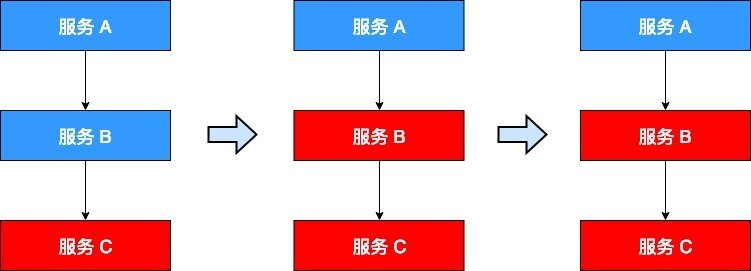
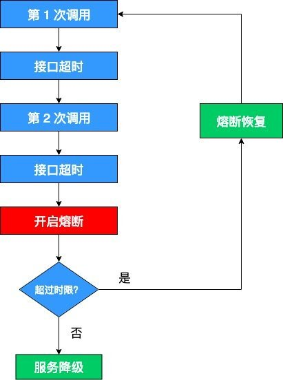
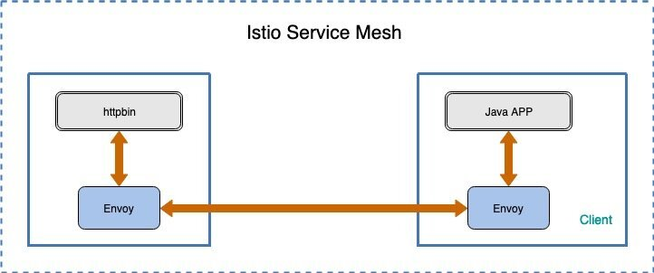

本文为翻译文章，点击查看原文。
在微服务领域，各个服务需要在网络上执行大量的调用。而网络是很脆弱的，如果某个服务繁忙或者无法响应请求，将有可能引发集群的大规模级联故障，从而造成整个系统不可用，通常把这种现象称为 服务雪崩效应。为了使服务有一定的冗余，以便在系统故障期间能够保持服务能力，我们可以使用熔断机制。
什么是熔断？
熔断（Circuit Breaking）这一概念来源于电子工程中的断路器（Circuit Breaker）。在互联网系统中，当下游服务因访问压力过大而响应变慢或失败，上游服务为了保护系统整体的可用性，可以暂时切断对下游服务的调用。这种牺牲局部，保全整体的措施就叫做熔断。
如果不采取熔断措施，我们的系统会怎样呢？我们来看一个栗子。
当前系统中有 A、B、C 三个服务，服务 A 是上游，服务 B 是中游，服务 C 是下游。它们的调用链如下：
一旦下游服务 C 因某些原因变得不可用，积压了大量请求，服务 B 的请求线程也随之阻塞。线程资源逐渐耗尽，使得服务 B 也变得不可用。紧接着，服务 A 也变为不可用，整个调用链路被拖垮。

像这种调用链路的连锁故障，就是上文所说的服务雪崩效应。
正所谓刮骨疗毒，壮士断腕。在这种时候，就需要我们的熔断机制来挽救整个系统。熔断机制的大体流程如下：

这里需要解释两点：
- 开启熔断：在固定时间窗口内，接口调用超时比率达到一个阈值，会开启熔断。进入熔断状态后，后续对该服务接口的调用不再经过网络，直接执行本地的默认方法，达到服务降级的效果。
- 熔断恢复：熔断不可能是永久的，当经过了规定时间之后，服务将从熔断状态恢复过来，再次接受调用方的远程调用。
Istio 中的熔断
Istio 是通过 Envoy Proxy 来实现熔断机制的，Envoy 强制在网络层面配置熔断策略，这样就不必为每个应用程序单独配置或重新编程。下面就通过一个示例来演示如何为 Istio 网格中的服务配置熔断的连接数、请求数和异常检测。
该示例的架构如图所示：

该示例由客户端和服务端组成，其中客户端是一个 Java HTTP 应用程序，被打包在镜像 docker.io/ceposta/http-envoy-client-standalone:latest 中，它用来模拟对后端服务 httpbin 发起 http 调用，所有的调用首先都会被 Envoy Proxy 拦截。
假设你的集群中已经部署了 Istio，没有启用 Sidecar 的自动注入，并且没有启用双向 TLS 身份验证。
部署示例
部署 httpbin 应用，该应用将会作为本示例的后端服务：
# 进入 istio 根目录
$ kubectl apply -f <(istioctl kube-inject -f samples/httpbin/httpbin.yaml)
创建一个 DestinationRule，针对 httpbin 服务设置熔断策略：
$ kubectl apply -f - <<EOF
apiVersion: networking.istio.io/v1alpha3
kind: DestinationRule
metadata:
name: httpbin
spec:
host: httpbin
trafficPolicy:
connectionPool:
tcp:
maxConnections: 1
http:
http1MaxPendingRequests: 1
maxRequestsPerConnection: 1
outlierDetection:
consecutiveErrors: 2
interval: 1s
baseEjectionTime: 3m
maxEjectionPercent: 100
EOF
查看该策略在 Envoy 中对应的 Cluster 配置：
$ kubectl get pod -l app=httpbin
NAME READY STATUS RESTARTS AGE
httpbin-d6d68fb97-cswzc 2/2 Running 0 2m
$ istioctl pc cluster httpbin-d6d68fb97-cswzc --fqdn httpbin.default.svc.cluster.local --direction outbound -o json
[
{
"name": "outbound|8000||httpbin.default.svc.cluster.local",
"type": "EDS",
"edsClusterConfig": {
"edsConfig": {
"ads": {}
},
"serviceName": "outbound|8000||httpbin.default.svc.cluster.local"
},
"connectTimeout": "1.000s",
"maxRequestsPerConnection": 1,
"circuitBreakers": {
"thresholds": [
{
"maxConnections": 1,
"maxPendingRequests": 1
}
]
},
"outlierDetection": {
"interval": "1.000s",
"baseEjectionTime": "180.000s",
"maxEjectionPercent": 100,
"enforcingConsecutive5xx": 0,
"consecutiveGatewayFailure": 2,
"enforcingConsecutiveGatewayFailure": 100
}
}
]
上面的配置告诉我们：
- maxConnections : 限制对后端服务发起的
HTTP/1.1连接数，如果超过了这个限制，就会开启熔断。 - maxPendingRequests : 限制待处理请求列表的长度， 如果超过了这个限制，就会开启熔断。
- maxRequestsPerConnection : 在任何给定时间内限制对后端服务发起的
HTTP/2请求数，如果超过了这个限制，就会开启熔断。
下面分别对这几个参数做详细解释。
- maxConnections : 表示在任何给定时间内， Envoy 与上游集群（这里指的是 httpbin 服务）建立的最大连接数。该配置仅适用于
HTTP/1.1协议，因为HTTP/2协议可以在同一个 TCP 连接中发送多个请求，而HTTP/1.1协议在同一个连接中只能处理一个请求。如果超过了这个限制（即断路器溢出），集群的upstream_cx_overflow 计数器就会递增。 - maxPendingRequests : 表示待处理请求队列的长度。因为
HTTP/2是通过单个连接并发处理多个请求的，因此该熔断策略仅在创建初始HTTP/2连接时有用，之后的请求将会在同一个 TCP 连接上多路复用。对于HTTP/1.1协议，只要没有足够的上游连接可用于立即分派请求，就会将请求添加到待处理请求队列中，因此该断路器将在该进程的生命周期内保持有效。如果该断路器溢出，集群的 upstream_rq_pending_overflow 计数器就会递增。 - maxRequestsPerConnection : 表示在任何给定时间内，上游集群中所有主机（这里指的是 httpbin 服务）可以处理的最大请求数。实际上，这适用于仅
HTTP/2集群，因为HTTP/1.1集群由最大连接数断路器控制。如果该断路器溢出，集群的 upstream_rq_pending_overflow 计数器就会递增。
Istio DestinationRule 与 Envoy 的熔断参数对照表如下所示：
| Envoy paramether | Envoy upon object | Istio parameter | Istio upon ojbect |
|---|---|---|---|
| max_connections | cluster.circuit_breakers | maxConnections | TCPSettings |
| max_pending_requests | cluster.circuit_breakers | http1MaxPendingRequests | HTTPSettings |
| max_requests | cluster.circuit_breakers | http2MaxRequests | HTTPSettings |
| max_retries | cluster.circuit_breakers | maxRetries | HTTPSettings |
| connect_timeout_ms | cluster | connectTimeout | TCPSettings |
| max_requests_per_connection | cluster | maxRequestsPerConnection | HTTPSettings |
最大连接数
现在我们已经为 httpbin 服务设置了熔断策略，接下来创建一个 Java 客户端，用来向后端服务发送请求，观察是否会触发熔断策略。这个客户端可以控制连接数量、并发数、待处理请求队列，使用这一客户端，能够有效的触发前面在目标规则中设置的熔断策略。该客户端的 deployment yaml 内容如下：
# httpbin-client-deploy.yaml
apiVersion: extensions/v1beta1
kind: Deployment
metadata:
name: httpbin-client-v1
spec:
replicas: 1
template:
metadata:
labels:
app: httpbin-client
version: v1
spec:
containers:
- image: ceposta/http-envoy-client-standalone:latest
imagePullPolicy: IfNotPresent
name: httpbin-client
command: ["/bin/sleep","infinity"]
这里我们会把给客户端也进行 Sidecar 的注入，以此保证 Istio 对网络交互的控制：
$ kubectl apply -f <(istioctl kube-inject -f httpbin-client-deploy.yaml)
下面来观察一下当客户端试图使用太多线程与上游集群建立并发连接时，Envoy 会如何应对。
在上面的熔断设置中指定了 maxConnections: 1 以及 http1MaxPendingRequests: 1。这意味着如果超过了一个连接同时发起请求，Istio 就会熔断，阻止后续的请求或连接。
先尝试通过单线程（NUM_THREADS=1）创建一个连接，并进行 5 次调用（默认值：NUM_CALLS_PER_CLIENT=5）：
$ CLIENT_POD=$(kubectl get pod | grep httpbin-client | awk '{ print $1 }')
$ kubectl exec -it $CLIENT_POD -c httpbin-client -- sh -c 'export URL_UNDER_TEST=http://httpbin:8000/get export NUM_THREADS=1 && java -jar http-client.jar'
using num threads: 1
Starting pool-1-thread-1 with numCalls=5 delayBetweenCalls=0 url=http://localhost:15001/get mixedRespTimes=false
pool-1-thread-1: successes=[5], failures=[0], duration=[545ms]
可以看到所有请求都通过了：
successes=[5]
我们可以查询 istio-proxy 的状态，获取更多相关信息：
$ kubectl exec -it $CLIENT_POD -c istio-proxy -- sh -c 'curl localhost:15000/stats' | grep httpbin
...
cluster.outbound|8000||httpbin.default.svc.cluster.local.upstream_cx_http1_total: 5
cluster.outbound|8000||httpbin.default.svc.cluster.local.upstream_cx_overflow: 0
cluster.outbound|8000||httpbin.default.svc.cluster.local.upstream_rq_total: 5
cluster.outbound|8000||httpbin.default.svc.cluster.local.upstream_rq_200: 5
cluster.outbound|8000||httpbin.default.svc.cluster.local.upstream_rq_2xx: 5
cluster.outbound|8000||httpbin.default.svc.cluster.local.upstream_rq_pending_overflow: 0
cluster.outbound|8000||httpbin.default.svc.cluster.local.upstream_rq_retry: 0
...
可以看出总共发送了 5 个 HTTP/1.1 连接，也就是 5 个请求，响应码均为 200。
下面尝试把线程数提高到 2：
$ kubectl exec -it $CLIENT_POD -c httpbin-client -- sh -c 'export URL_UNDER_TEST=http://httpbin:8000/get export NUM_THREADS=2 && java -jar http-client.jar'
using num threads: 2
Starting pool-1-thread-1 with numCalls=5 parallelSends=false delayBetweenCalls=0 url=http://httpbin:8000/get mixedRespTimes=false
Starting pool-1-thread-2 with numCalls=5 parallelSends=false delayBetweenCalls=0 url=http://httpbin:8000/get mixedRespTimes=false
pool-1-thread-1: successes=[3], failures=[2], duration=[96ms]
pool-1-thread-2: successes=[4], failures=[1], duration=[87ms]
再次查看 istio-proxy 的状态：
$ kubectl exec -it $CLIENT_POD -c istio-proxy -- sh -c 'curl localhost:15000/stats' | grep httpbin
...
cluster.outbound|8000||httpbin.default.svc.cluster.local.upstream_cx_http1_total: 7
cluster.outbound|8000||httpbin.default.svc.cluster.local.upstream_cx_overflow: 3
cluster.outbound|8000||httpbin.default.svc.cluster.local.upstream_rq_total: 10
cluster.outbound|8000||httpbin.default.svc.cluster.local.upstream_rq_200: 7
cluster.outbound|8000||httpbin.default.svc.cluster.local.upstream_rq_2xx: 7
cluster.outbound|8000||httpbin.default.svc.cluster.local.upstream_rq_503: 3
cluster.outbound|8000||httpbin.default.svc.cluster.local.upstream_rq_5xx: 3
cluster.outbound|8000||httpbin.default.svc.cluster.local.upstream_rq_pending_overflow: 3
cluster.outbound|8000||httpbin.default.svc.cluster.local.upstream_rq_retry: 0
...
总共发送了 10 个 HTTP/1 连接，只有 7 个 被允许通过，剩余请求被断路器拦截了。其中 upstream_cx_overflow 的值为 3，表明 maxConnections 断路器起作用了。Istio-proxy 允许一定的冗余，你可以将线程数提高到 3，熔断的效果会更明显。
待处理请求队列
测试完 maxConnections 断路器之后，我们再来测试一下 maxPendingRequests 断路器。前面已经将 maxPendingRequests 的值设置为 1，现在按照预想，我们只需要模拟在单个 HTTP/1.1 连接中同时发送多个请求，就可以触发该断路器开启熔断。由于 HTTP/1.1 同一个连接只能处理一个请求，剩下的请求只能放到待处理请求队列中。通过限制待处理请求队列的长度，可以对恶意请求、DoS 和系统中的级联错误起到一定的缓解作用。
现在尝试通过单线程（NUM_THREADS=1）创建一个连接，并同时发送 20 个请求（PARALLEL_SENDS=true，NUM_CALLS_PER_CLIENT=20）：
$ kubectl exec -it $CLIENT_POD -c httpbin-client -- sh -c 'export URL_UNDER_TEST=http://httpbin:8000/get export NUM_THREADS=1 export PARALLEL_SENDS=true export NUM_CALLS_PER_CLIENT=20 && java -jar http-client.jar'
using num threads: 1
Starting pool-1-thread-1 with numCalls=20 parallelSends=true delayBetweenCalls=0 url=http://httpbin:8000/get mixedRespTimes=false
finished batch 0
finished batch 5
finished batch 10
finished batch 15
pool-1-thread-1: successes=[16], failures=[4], duration=[116ms]
查询 istio-proxy 的状态：
$ kubectl exec -it $CLIENT_POD -c istio-proxy -- sh -c 'curl localhost:15000/stats' | grep httpbin | grep pending
cluster.outbound|8000||httpbin.default.svc.cluster.local.upstream_rq_pending_active: 0
cluster.outbound|8000||httpbin.default.svc.cluster.local.upstream_rq_pending_failure_eject: 0
cluster.outbound|8000||httpbin.default.svc.cluster.local.upstream_rq_pending_overflow: 4
cluster.outbound|8000||httpbin.default.svc.cluster.local.upstream_rq_pending_total: 16
upstream_rq_pending_overflow 的值是 4，说明有 4 次调用触发了 maxPendingRequests 断路器的熔断策略，被标记为熔断。
如果服务完全崩溃怎么办？
现在我们知道 Envoy 的熔断策略对集群中压力过大的上游服务起到一定的保护作用，但还有一种极端的情况需要我们考虑，如果集群中的某些节点完全崩溃（或者即将完全崩溃）该怎么办？
为了专门应对这种情况，Envoy 中引入了异常检测的功能，通过周期性的异常检测来动态确定上游集群中的某些主机是否异常，如果发现异常，就将该主机从连接池中隔离出去。异常检测是被动健康检查的一种形式，Envoy 同时支持主动健康检查和被动健康检查，它们可以同时启用，联合决定上游主机的健康状况。
异常检测的隔离算法
根据异常检测的类型，对主机的隔离可以连续执行（例如连续返回 5xx 状态码），也可以周期性执行（例如配置了周期性成功率检测）。隔离算法的工作流程如下：
- 检测到了某个主机异常。
- 如果到目前为止负载均衡池中还没有主机被隔离出去，Envoy 将会立即隔离该异常主机；如果已经有主机被隔离出去，就会检查当前隔离的主机数是否低于设定的阈值（通过 outlier_detection.max_ejection_percent 指定），如果当前被隔离的主机数量不超过该阈值，就将该主机隔离出去，否则不隔离。
- 隔离不是永久的，会有一个时间限制。当主机被隔离后，该主机就会被标记为不健康，并且不会被加入到负载均衡池中，除非负载均衡处于恐慌模式。隔离时间等于 outlier_detection.base_ejection_time_ms 的值乘以主机被隔离的次数。所以如果某个主机连续出现故障，会导致它被隔离的时间越来越长。
- 经过了规定的隔离时间之后，被隔离的主机将会自动恢复过来，重新接受调用方的远程调用。通常异常检测会与主动健康检查一起用于全面的健康检查解决方案。
恐慌模式指的是：在这种情况下，代理服务器会无视负载均衡池的健康标记，重新向所有主机发送数据。这是一个非常棒的机制。在分布式系统中，必须了解到的一点是，有时候“理论上”的东西可能不是正常情况，最好能降低一点要求来防止扩大故障影响。另外一方面，可以对这一比例进行控制（缺省情况下超过 50% 的驱逐就会进入恐慌状态），可以提高，也可以禁止这一阈值。
异常检测类型
Envoy 支持以下几种异常检测类型：
- 连续
5xx响应：如果上游主机连续返回一定数量的5xx响应，该主机就会被驱逐。注意，这里的5xx响应不仅包括返回的5xx状态码（包括500），也包括 HTTP 路由返回的一个事件（如连接超时和连接错误）。隔离主机所需的5xx响应数量由 outlier_detection.consecutive_5xx 的值控制。 - 连续网关故障：如果上游主机连续返回一定数量的
"gateway errors"（502，503或504状态码，但不包括500），该主机就会被驱逐。这里同样也包括 HTTP 路由返回的一个事件（如连接超时和连接错误）。隔离主机所需的连续网关故障数量由 outlier_detection.consecutive_gateway_failure 的值控制。 - 调用成功率：基于调用成功率的异常检测类型会聚合集群中每个主机的调用成功率，然后根据统计的数据以给定的周期来隔离主机。如果该主机的请求数量小于 outlier_detection.success_rate_request_volume 指定的值，则不会为该主机计算调用成功率，因此聚合的统计数据中不会包括该主机的调用成功率。如果在给定的周期内具有最小所需请求量的主机数小于 outlier_detection.success_rate_minimum_hosts 指定的值，则不会对该集群执行调用成功率检测。
Istio DestinationRule 与 Envoy 的异常检测参数对照表如下所示：
| Envoy paramether | Envoy upon object | Istio parameter | Istio upon ojbect |
|---|---|---|---|
| consecutive_gateway_failure | cluster.outlier_detection | consecutiveErrors | outlierDetection |
| interval | cluster.outlier_detection | interval | outlierDetection |
| baseEjectionTime | cluster.outlier_detection | baseEjectionTime | outlierDetection |
| maxEjectionPercent | cluster.outlier_detection | maxEjectionPercent | outlierDetection |
Envoy 中还有一些其他参数在 Istio 中暂时是不支持的，具体参考 Envoy 官方文档 Outlier detection。
现在我们回头再来看一下本文最初创建的 DestinationRule 中关于异常检测的配置：
outlierDetection:
consecutiveErrors: 2
interval: 1s
baseEjectionTime: 3m
maxEjectionPercent: 100
该配置表示每秒钟扫描一次上游主机，连续失败 1 次返回 5xx 错误码的所有主机会被移出连接池 3 分钟。
异常检测示例
下面我们通过调用一个 URL 来指定 httpbin 服务返回 502 状态码，以此来触发连续网关故障异常检测。总共发起 3 次调用，因为 DestinationRule 中的配置要求 Envoy 的异常检测机制必须检测到两个连续的网关故障才会将 httpbin 服务移除负载均衡池。
$ kubectl exec -it $CLIENT_POD -c httpbin-client -- sh -c 'export URL_UNDER_TEST=http://httpbin:8000/status/502 export NUM_CALLS_PER_CLIENT=3 && java -jar http-client.jar'
using num threads: 1
Starting pool-1-thread-1 with numCalls=3 parallelSends=false delayBetweenCalls=0 url=http://httpbin:8000/status/502 mixedRespTimes=false
pool-1-thread-1: successes=[0], failures=[3], duration=[99ms]
查看 istio-proxy 的状态：
$ kubectl exec -it $CLIENT_POD -c istio-proxy -- sh -c 'curl localhost:15000/stats' | grep httpbin | grep outlier
cluster.outbound|8000||httpbin.default.svc.cluster.local.outlier_detection.ejections_active: 1
cluster.outbound|8000||httpbin.default.svc.cluster.local.outlier_detection.ejections_consecutive_5xx: 0
cluster.outbound|8000||httpbin.default.svc.cluster.local.outlier_detection.ejections_detected_consecutive_5xx: 0
cluster.outbound|8000||httpbin.default.svc.cluster.local.outlier_detection.ejections_detected_consecutive_gateway_failure: 1
cluster.outbound|8000||httpbin.default.svc.cluster.local.outlier_detection.ejections_detected_success_rate: 0
cluster.outbound|8000||httpbin.default.svc.cluster.local.outlier_detection.ejections_enforced_consecutive_5xx: 0
cluster.outbound|8000||httpbin.default.svc.cluster.local.outlier_detection.ejections_enforced_consecutive_gateway_failure: 1
cluster.outbound|8000||httpbin.default.svc.cluster.local.outlier_detection.ejections_enforced_success_rate: 0
cluster.outbound|8000||httpbin.default.svc.cluster.local.outlier_detection.ejections_enforced_total: 1
cluster.outbound|8000||httpbin.default.svc.cluster.local.outlier_detection.ejections_overflow: 0
cluster.outbound|8000||httpbin.default.svc.cluster.local.outlier_detection.ejections_success_rate: 0
cluster.outbound|8000||httpbin.default.svc.cluster.local.outlier_detection.ejections_total: 0
确实检测到了连续网关故障，consecutive_gateway_failure 的值为 1。但是我通过查看 EDS，发现 Envoy 并没有将 httpbin 服务移出负载均衡池：
$ export PILOT_SVC_IP=$(kubectl -n istio-system get svc istio-pilot -o go-template='{{.spec.clusterIP}}')
$ curl -s http://$PILOT_SVC_IP:8080/debug/edsz|grep "outbound|8000||httpbin.default.svc.cluster.local" -B 1 -A 15
{
"clusterName": "outbound|8000||httpbin.default.svc.cluster.local",
"endpoints": [
{
"locality": {
},
"lbEndpoints": [
{
"endpoint": {
"address": {
"socketAddress": {
"address": "172.30.104.27",
"portValue": 8000
}
}
},
回去重新看了一下 Envoy 的配置，enforcingConsecutiveGatewayFailure 的值为 100，理论上 outlierDetection 应该是生效的。但这里我疏忽了 Envoy 的恐慌模式，Envoy 默认的恐慌阈值是 50%，而 httpbin 应用只有一个 upstream，所以没有被移除。当然这只是个人猜测，暂时也没时间验证，大家可以自己验证一下。